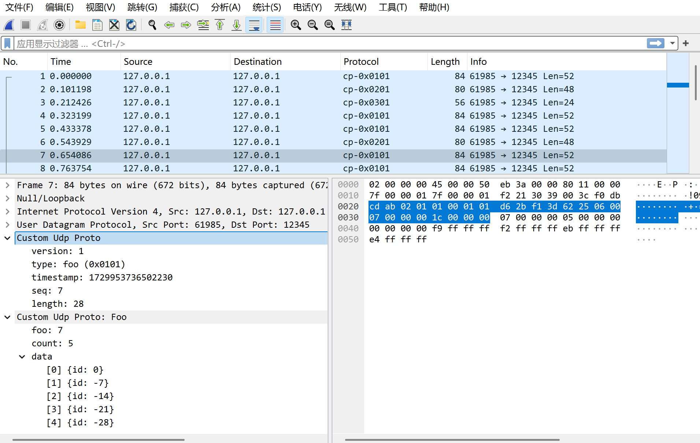

Wireshark Lua 解析自定义协议
[TOC]
脚本放置位置
帮助 -> 关于 -> 文件夹；将脚本放在 lua 插件目录下，按下 ctrl + shift +l 即可加载
协议结构体
struct Proto {
uint32_t magic = 0x0102ABCD; // 固定值
uint16_t version;
uint16_t type; // 0x101-MsgTypeFoo 0x201-MsgTypeBar 0x301-length为0
int64_t timestamp;
uint32_t seq;
uint32_t length;
char payload[0];
};
struct MsgTypeFoo {
uint32_t foo;
uint32_t count;
struct Data {
int32_t id;
} data[0];
};
struct MsgTypeBar {
uint32_t bar;
char data[20];
};
解析脚本
-- 创建协议，名称，描述
local proto = Proto('cp', 'Custom Udp Proto')
-- 添加字段，名称，描述，显示进制；名称可以在上方显示过滤的地方使用
local cp_version = ProtoField.uint16("cp.version", "version", base.DEC)
local cp_type_val_str = {
[0x101] = "foo",
[0x201] = "bar"
}
local cp_type = ProtoField.uint16("cp.type", "type", base.HEX, cp_type_val_str)
local cp_timestamp = ProtoField.uint64("cp.timestamp", "timestamp", base.DEC)
local cp_seq = ProtoField.uint32("cp.seq", "seq", base.DEC)
local cp_length = ProtoField.uint32("cp.length", "length", base.DEC)
proto.fields = { cp_version, cp_type, cp_timestamp, cp_seq, cp_length }
local foo_proto = Proto('cp.foo', 'Custom Udp Proto: Foo')
local foo_foo = ProtoField.uint32("cp.foo.foo", "foo", base.DEC)
local foo_count = ProtoField.uint32("cp.foo.count", "count", base.DEC)
foo_proto.fields = { foo_foo, foo_count }
function foo_proto.dissector(buffer, pinfo, tree)
local subtree = tree:add(foo_proto, buffer())
subtree:add_le(foo_foo, buffer(0, 4))
subtree:add_le(foo_count, buffer(4, 4))
local count = buffer(4, 4):le_uint()
if count == 0 then
return buffer:len()
end
local foo_data_tree = subtree:add(buffer(8, count * 4), "data")
for i = 0, count - 1 do
foo_data_tree:add_le(buffer(8 + i * 4, 4), string.format("[%d] {id: %d}", i, buffer(8 + i * 4, 4):le_int()))
end
return buffer:len()
end
local bar_proto = Proto('cp.bar', 'Custom Udp Proto: Bar')
local bar_bar = ProtoField.uint32("cp.bar.bar", "bar")
local bar_data = ProtoField.stringz("cp.bar.data", "data")
bar_proto.fields = { bar_bar, bar_data }
function bar_proto.dissector(buffer, pinfo, tree)
local subtree = tree:add(bar_proto, buffer())
subtree:add_le(bar_bar, buffer(0, 4))
subtree:add(bar_data, buffer(4, buffer:len() - 4))
return buffer:len()
end
local function packet_heuristic_dissector(buffer, pinfo, tree)
local proto_length = 24
local len = buffer:len()
if len < proto_length then
return false
end
if buffer(0, 4):le_uint() ~= 0x0102ABCD then
return false
end
-- 赋值协议列
pinfo.cols.protocol = string.format("cp-0x%04X", tostring(buffer(6, 2):le_uint()))
-- 字段解析
local subtree = tree:add(proto, buffer()):set_len(proto_length)
subtree:add_le(cp_version, buffer(4, 2))
subtree:add_le(cp_type, buffer(6, 2))
subtree:add_le(cp_timestamp, buffer(8, 8))
subtree:add_le(cp_seq, buffer(16, 4))
subtree:add_le(cp_length, buffer(20, 4))
local payload_length = buffer(20, 4):le_uint()
if payload_length == 0 then
return true
end
if len < proto_length + payload_length then
subtree:set_text(string.format("Custom Udp Proto Error: headerLen(%d) + payloadLen(%d) > len(%d)",
proto_length, payload_length, len))
end
local type = buffer(6, 2):le_uint()
local remaining_len = len - proto_length
local remaining_buffer = buffer(proto_length, len - proto_length):tvb()
if type == 0x101 then
remaining_len = remaining_len - foo_proto.dissector(remaining_buffer, pinfo, tree)
elseif type == 0x201 then
remaining_len = remaining_len - bar_proto.dissector(remaining_buffer, pinfo, tree)
end
if remaining_len > 0 then
Dissector.get("data"):call(buffer(len - remaining_len, remaining_len):tvb(), pinfo, tree)
end
return true
end
-- 注册协议到udp
proto:register_heuristic("udp", packet_heuristic_dissector)
效果展示

附件
官方文档
https://www.wireshark.org/docs/wsdg_html_chunked/
第十章和第十一章主要讲 lua 脚本
测试用 pcap
https://zcteo.github.io/pages-assitant/others/012/12345.pcap
由于个人水平有限，文中若有不合理或不正确的地方欢迎指出改正